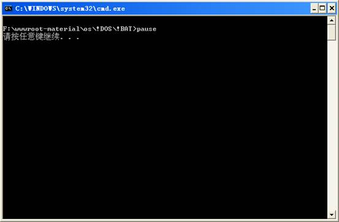

echo、@、call、pause、rem(小技巧：用::代替rem)是批处理文件最常用的几个命令，我们就从他们开始学起。
echo 表示显示此命令后的字符
echo off 表示在此语句后所有运行的命令都不显示命令行本身
@与echo off相象，但它是加在每个命令行的最前面，表示运行时不显示这一行的命令行（只能影响当前行）。
call 调用另一个批处理文件（如果不用call而直接调用别的批处理文件，那么执行完那个批处理文件后将无法返回当前文件并执行当前文件的后续命令）。
pause 运行此句会暂停批处理的执行并在屏幕上显示“Press any key to continue...”或“请按任意键继续。。。”的提示，等待用户按任意键后继续。
例：pause.bat
pause

rem 表示此命令后的字符为解释行（注释），不执行，只是给自己今后参考用的（相当于程序中的注释）。